타투이스트들은 생각보다 많은 기술 장비와 위생장비로 작업합니다.
아래의 장비들을 둘러보세요.
scroll down
타투 머신은 잉크를 피부에 주입하는 기본 도구로,
코일 머신과 로터리 머신이 있습니다. 각각의 머신은 다양한 스타일과 기술에 맞추어 선택 할 수 있습니다.
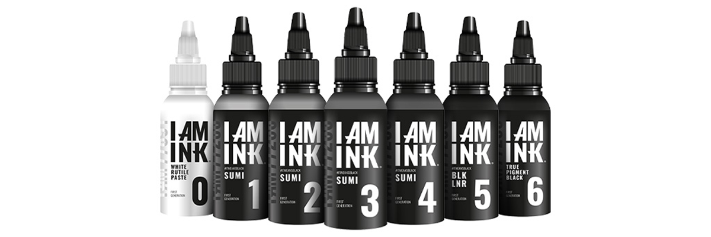
타투 잉크는 피부에 색상에 부여하는 중요한 요소입니다.
고품질 잉크는 색상이 선명하고, 안정성이 검증된 제품을 선택하는 것이 중요합니다.
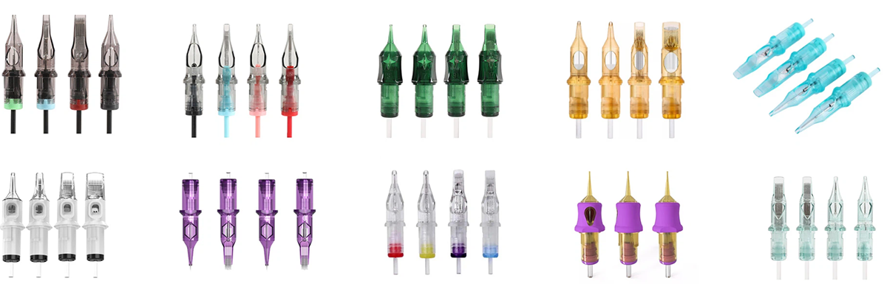
타투 니들은 디자인의 세밀함과 선명도를 결정짓는 중요한 도구 입니다.
다양한 크기와 형태가 있어 작업에 맞는 바늘을 선택해야 합니다.
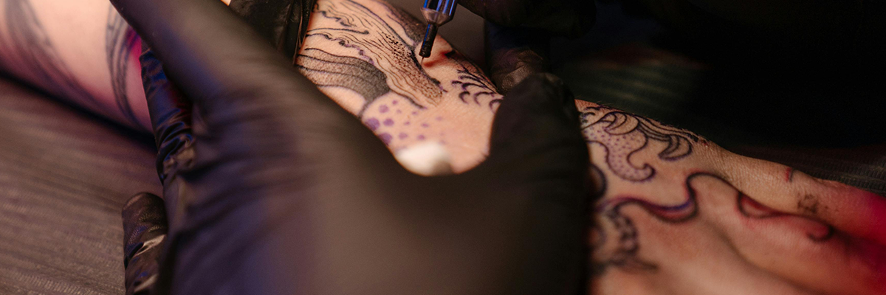
타투 작업 시 위생을 위해 반드시 착용해야 하는 장비 입니다.
일회용 장갑을 사용하여 감영위험을 줄이는 것이 중요합니다.
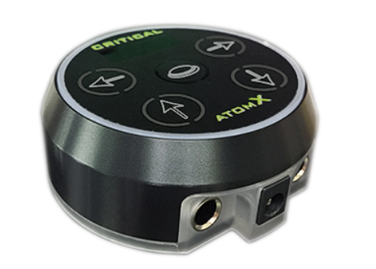
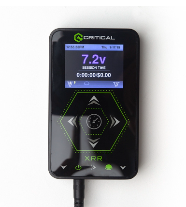
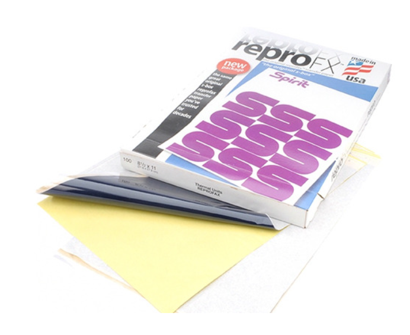
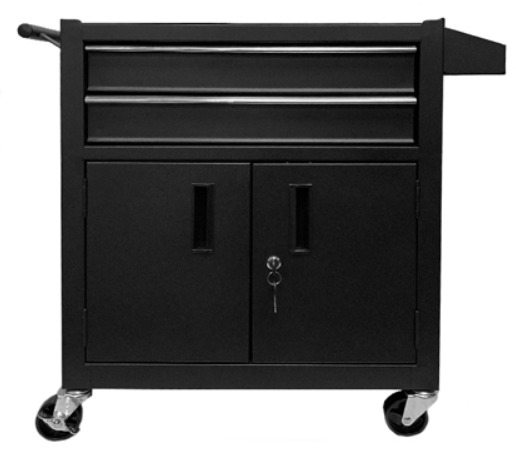
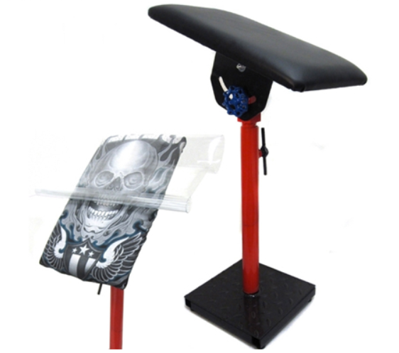
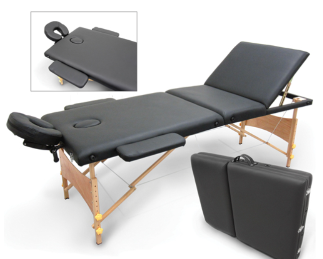
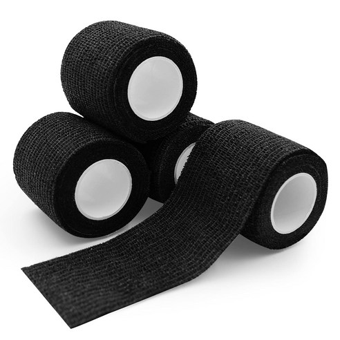
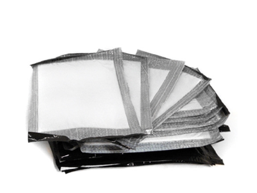
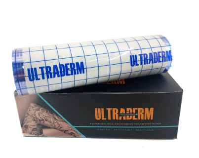
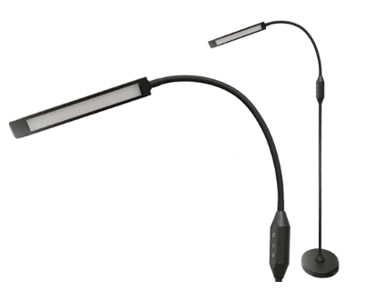